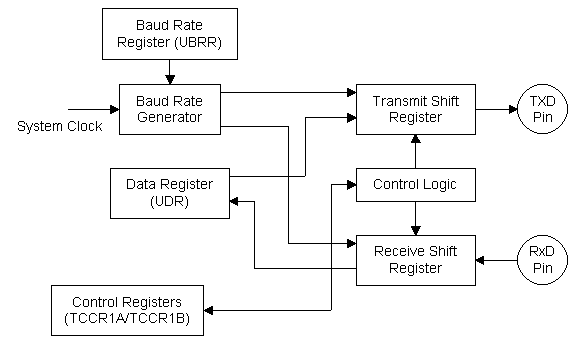
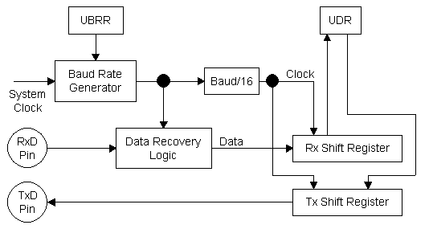
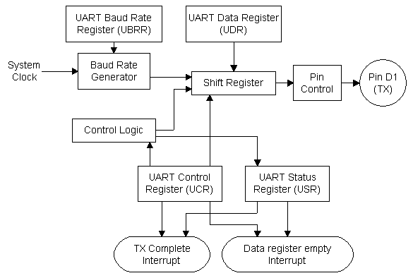
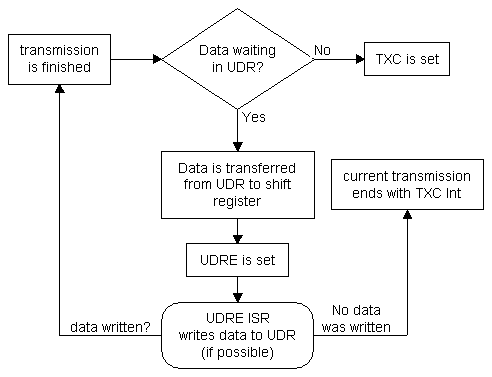
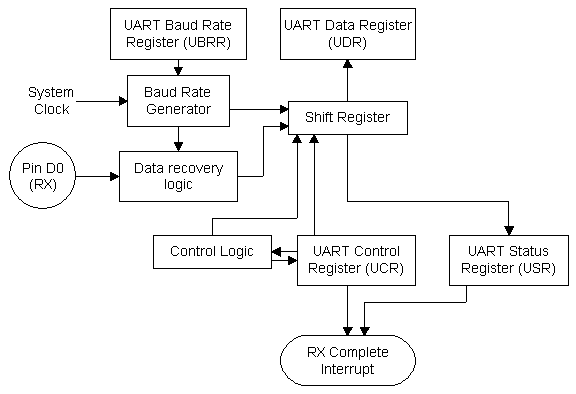
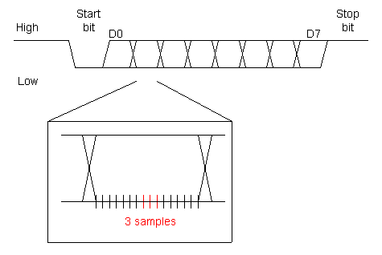

[Registers] [Baud Rate Generator] [TX] [RX] [Important Hardware Note]
[Registers] [Baud Rate Generator] [TX] [RX] [Important Hardware Note]
The AVR UART is a very powerful and useful peripheral and used in most projects. It can be used for debugging code, user interaction, or just sending data for logging it on a PC. Here's an image of how it basically is built up (based on the AT90S2313 UART):

The AVR UART can be set up to transmit 8 or 9 bits, no parity, one Stop bit. It filters the data received and also detects overrun conditions and framing errors. It has three interrupts and allows highly efficient data stream handling with software buffers.
From the diagram you see that the transmitter and receiver share the UDR (UART Data Register). Actually they only share the UDR address: The "real" register is divided into the transmitter and receiver register so that received data cannot overwrite data being written into the transmit register. Consequently you can't read back data you wrote into the transmitter register.
As both parts of the UART, the transmitter and the recevier, share the Baud Rate Generator and the control registers, I'll explain them first before showing you the basics of transferring data via the UART.
UDR
Of course, the UART has a Data Register (UDR). It is buffered in receive direction, so that a completely received byte can be read while the next one is being shifted in. The transmitter part of this register is not buffered (what for?). A transmission is initiated when data is written to UDR. When reading from UDR, the byte shifted in by the receiver part of the UART is read. You can not read back the last byte transmitted.
UBRR
The Uart Baud Rate Register is used to set the clock for the UART shift registers. See The Baud Rate Generator part of this page for details on how it works and what to do with it. In fast AVRs (megas) it is a 16-bit register that allows low baud rates at high CPU speeds.
The UART Control Register controls the receiver and transmitter functions and interrupts.
| Bit 7 | Bit 0 | ||||||
|---|---|---|---|---|---|---|---|
| RXCIE | TXCIE | UDRIE | RXEN | TXEN | CHR9 | RXB8 | TXB8 |
RXCIE: Receive Complete Interrupt Enable; If this bit is set, the reception of a byte via the UART will cause an Interrupt if global Ints are enabled.
TXCIE: Just the same as RXCIE, but will allow a transmit complete Interrupt.
UDRIE: UART Data Register Empty Interrupt Enable; If this bit is set, an interrupt occurs if UDR is empty. That allows writing the next byte to UDR while the currently being sent byte is still in the shift register. Also good if the transmit complete interrupt doesn't write the next byte to UDR. It also allows interrupt driven start of a transmission if nothing was sent before and a transmit complete interrupt therefore can't occur.
RXEN: Receiver Enable; If this bit is set, the UART receiver is enabled and the RXD pin is set up as an input pin connected to the UART. All the previous port settings are now disabled, but not overwritten: Disabling the receiver again will restore the old port settings.
TXEN: Transmitter Enable; If this bit is set, the UART transmitter is enabled and the the TXD pin is set up as an output pin connected to the transmitter.
CHR9: 9 bit characters; This bit enables the 9-bit character size. By default, it is set to 0 and 8 bits are used. If 9 bit characters are enabled, the 9th bit is found in RXB8 and TXB8.
RXB8: If CHR9 is set, this is the 9th received bit.
TXB8: If CHR9 is set, this is the 9th bit that is to be transmitted.
If 9 bit transmissions are enabled, TXB8 has to be filled before transmission is started by writing the lower 8 bits to UDR. RXB8 is valid after the received data has been transferred from the rx shift register. It is buffered as well, so it doesn't change until a new byte is completely received.
The UART status register holds status flags such as interrupt flags, overflow and framing error flags:
| Bit 7 | Bit 0 | ||||||
|---|---|---|---|---|---|---|---|
| RXC | TXC | UDRE | FE | OR | --- | --- | --- |
RXC:
Receive Complete; This is the interrupt flag that is set when the UART has completely received a character. You can clear it in software by writing a 1 to it. You can either use it to let the AVR execute the interrupt service routine or poll it in a loop with interrupts disabled.
TXC:
Transmit Complete; This flag is set when a transmit is completed. It can be used in the same ways as RXC (regarding clearing it in software and polling).
UDRE:
UART Data Register Empty; This flag is set while the UDR is empty. This condition occurs when a character is transferred from the UDR to the transmit shift register. If the next character is written to UDR now, it will not be transferred to the UDR until the character currently being transferred is completely shifted out.
This flag can be used to ensure maximum throughput by using a software buffer. Consequently, the UDRE ISR has to wite UDR: Otherwise the interrupt will occur again until data has been written to UDR or the UDRIE flag has been cleared.
UDRE is set upon reset to indicate that the transmitter is ready.
FE:
Framing Error; This flag is set if the STOP bit is not received correctly. This is the case if it was interpreted to be low by the data recovery logic. And that's wrong. So if the FE bit is read 1 by your software, you must have serious noise problems or another hardware error.
OR:
OverRun; The OverRun Flag is very useful for detecting if your code is handling incoming data fast enough: It is set when a character is transferred from the rx shift register to UDR before the previously received character is read. It is cleared again when the next character is read.
The UART Baud Rate Generator defines the clock used for transmitting and receiving data via the UART. Unlike the timer clock, which can be prescaled in some rough steps, the UART clock can be divided very precisely, resulting in clean and (to some extent) error-free data transfer.

You might have noticed that the baud rate is divided by 16 before it is fed into the Rx/Tx Shift registers. The clock generated by the UART baud rate generator is 16 times higher than the baud rate we want to use for transferring data.
This clock is used by the Data Recovery Logic: It samples the data and therefore filters it a bit, so that less errors occur. In the middle of a bit that is to be received, it takes three samples: The two (or three) equal samples are high, the bit shifted into the Rx Shift register is high as well. If two samples are wrong, the data in the shift register is also wrong, but that is only possible if the connection is really bad.
The Clock used for shifting in the data is then divided by 16 (see diagram) and therefore corresponds to the baud rate.
As there's no need to sample data for the Tx shift register, it is directly clocked by the baud rate.
The formlua for calculating the Baud rate generated from a specific value in UBRR (UART Baud Rate Register) the AVR datasheets presents this formula:
BAUD= fck / (16(UBRR+1))
Example: System Clock is 8 MHz and we need 9600 Baud. Unfortunatley, the formula above does not give us the UBRR value from fck and baud rate, but Baud rate from fck and UBRR. The better version for this of the formula is:
| UBRR = |
fck
|
- 1
|
|
(16 * baud)
|
Using the value above (8 MHz and 9600 baud) we get the value of 51.08333333 for UBRR. So it's 51. The error we get is the actual baud ratedivided by the desired bud rate: The actual baud rate is (first formula!) 9615 baud, dividing this by 9600 gives 1.0016 and therefore an error of 0.16%.
This will work, but it's not perfect. That's why you can get crystals with funny frequencies, such as 7.3728 MHz: Using that one for 9600 baud gives (2nd formula) us UBRR = 47 and no error. You can find tables with various clock/baud combinations in the AVR datasheets. If you can't find the one you want to use, just use the formulas above which wil give you the same results.

The UART transmitter sends data from the AVR to some other device (data logger, PC, ...anything) at the specified Baud Rate. The transmission is initiated by writing data to UDR. This data is then transferred to the TX shift register when the previously written byte has been shifted out completely. The next byte can now be written to UDR.
When a byte is transferred to the TX shift register, the UDRE flag is set. The UDRE ISR can write the next byte to UDR without corrupting the transmission in progress.
When a byte is completely shifted out AND no data has been written to UDR by the UDRE ISR, the TXC flag is set.
How the transmitter interrupt flags work together can be understood quite easily with the following flow chart:

This flow chart depends on a software FIFO buffer which is a somehow non-trivial task, but it also explains the flags pretty well I think: The transmission complete flag will only be set if the transmission is really complete: By writing the buffer software properly YOU tell the UART when the transmission is complete. Isn't that cool?

The UART receiver is basically built up like the transmitter, but with the appropriate extras for receiving data: Data recovery logic for sampling the data and just one interrupt for the completion of data reception. It uses the same baud rate setting as the transmitter. The data is sampled in the middle of the bit to be received:

The small lines at the bottom of the image (three of which are samples) are the clock generated by the UART Baud Rate Generator. This should also make clear why the baud rate is first generated 16 times higher than needed and then divided by 16 in order to shift in the data. This higher baud rate is used for sampling/filtering.
If you want to connect your AVR to a PC you have to use RS-232 voltage levels. The voltage levels used by an AVR are normal TTL levels (5V or 3.3V for high and 0V for low levels). RS-232 levels are much different from that.
To convert the logic levels to RS-232 you need a normal level converter such as the MAX232. It's pretty cheap an only needs a few external caps to work. It comes in a variety of packages and is available almost everywhere.